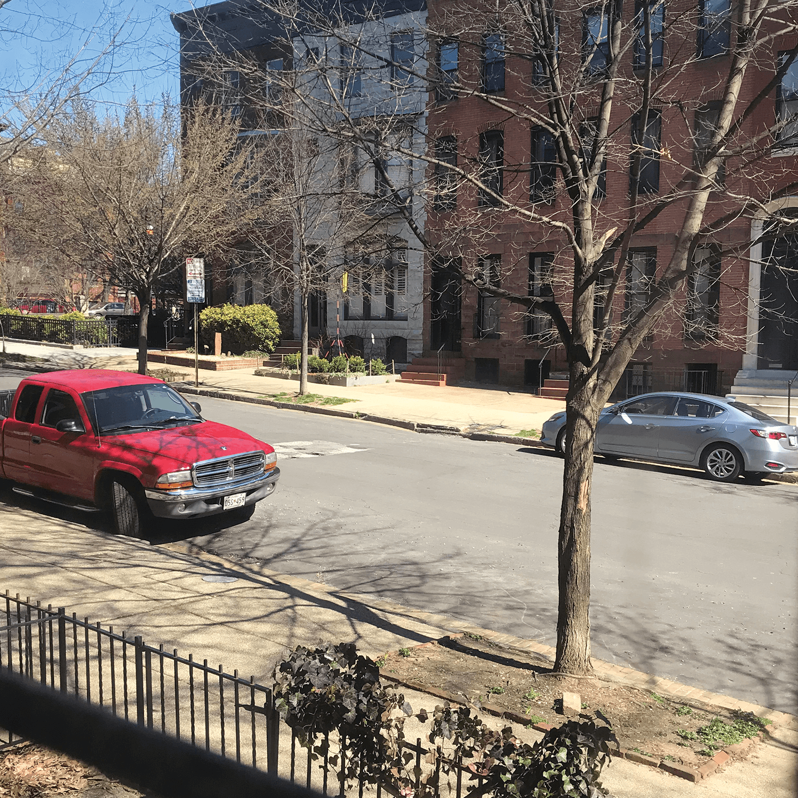

Monday morning, I woke up around 8am. My plan for the day was to work on
my Typography 2 homework before my forum class. Making a pot of coffee before going to the library.At the library looking for a book I can use for my typography 2 project. I ended up checking
out
A Designer's Perspective and Something From Nothing. I ended up picking A Designer's Perspective for
my project.
Walking back to my apartment after leaving the library.Reading my book that I will be using for my typography class.Working on my project for Typography 2 instead of going to my
forum lecture because it did not sound interesting to me. I like to do all of
my work last minute because that way I can guarantee to stress myself out.
At the Motor House acrossed the bridge on North Ave. This
is where my forum 2 class was today. I am new to Baltimore and have not ventured out into the
Station North area yet, I am hoping to at some point soon.
Walking back to my apartment on break from class. I picked up some french fries
and ate them while walking in the rain, for no discernible reason. Leaving my forum class and walking back to my apartment once again. Cooking myself dinner. I cooked some seitan and broccoli.
I season everything with lemon pepper, garlic salt, and crushed red pepper.
Working on my concept design for this project! I ended up changing some aspects
but kept it basically the same.
Working on my drawings for class. I am terrible at drawings but
I feel as though I have learned some new skills that I may never use again.
Who knows.
Decided to stop working on my drawings and
continue work on my Typography project.
After a day of half accomplishing my goals, and deciding for no reason
to save the rest for tomorrow, I go to bed.